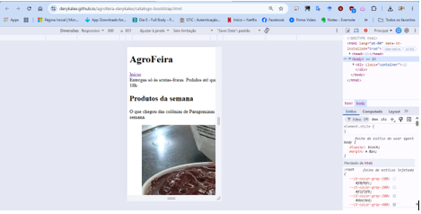
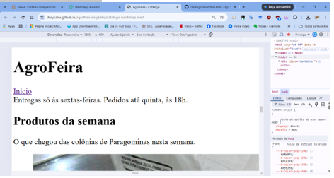
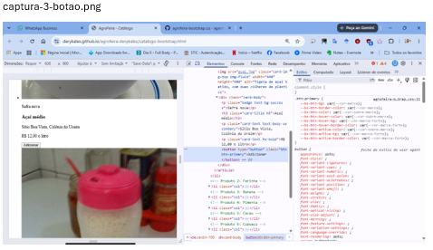
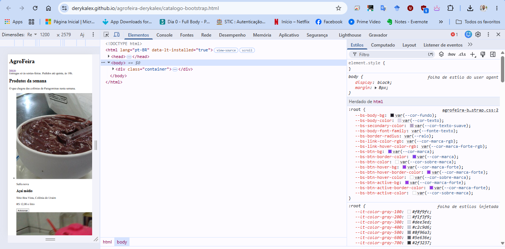
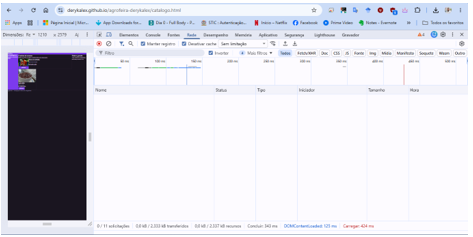
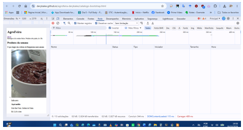
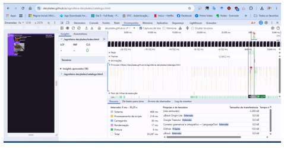
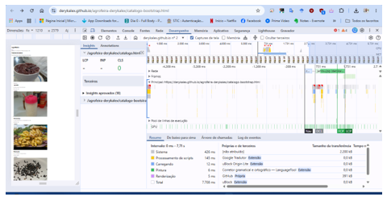

Estudo Comparativo entre o Catálogo Autoral e o Catálogo em Bootstrap
Aluno: Alex da Silva Oliveira | Matrícula: 2024008859
Abaixo encontram-se os links de acesso direto a todas as páginas e recursos desenvolvidos e publicados no GitHub Pages:
No âmbito do Laboratório de Produção de Software, o projeto AgroFeira evoluiu através de etapas estruturadas:
header, main, footer, article, aside).reset.css, tokens.css, base.css e componentes.css). O ficheiro tokens.css concentrou todas as decisões de design em variáveis globais (:root).container, row, col) e componentes prontos (card, btn, alert, badge, list-group).!important, criou-se o ficheiro agrofeira-bootstrap.css, ligando as variáveis nativas do framework (--bs-*) diretamente aos tokens de design do projeto.Análise do comportamento responsivo do catálogo em Bootstrap nas larguras de 360 px, 768 px e 1200 px.


Documentação da aplicação das decisões visuais do projeto sobre o framework através de tokens e variáveis CSS.
| Variável Alterada | Valor / Token | Por quê (Impacto Visual) |
|---|---|---|
--bs-body-bg |
var(--cor-fundo) (#fbf8f1) |
Define o fundo creme institucional em toda a página. |
--bs-body-color |
var(--cor-texto) (#1f2a1f) |
Aplica a cor de texto principal do projeto. |
--bs-btn-bg / --bs-btn-border-color |
var(--cor-marca) (#2e6b30) |
Aplica a cor da marca no fundo e borda do botão principal. |
--bs-link-color-rgb |
var(--cor-marca-rgb) (46, 107, 48) |
Garante que o link comum adote a cor da marca com contraste adequado. |
--bs-border-radius |
var(--raio) (12px) |
Padroniza o arredondamento dos cantos dos cartões e botões. |
Por que --bs-primary sozinha no root não muda o botão: A regra .btn-primary do Bootstrap define diretamente a propriedade --bs-btn-bg com um valor fixo, ignorando a variável global --bs-primary. Para customizar o botão sem recompilar o Sass, é necessário redefinir explicitamente as variáveis do componente (--bs-btn-bg e irmãs) na regra .btn-primary.

.btn-primary no F12.
Medição de desempenho e transferência realizada no Chrome com a cache desligada (largura da área da página: 1210 × 2579 px).
| Critério | Autoral | Bootstrap |
|---|---|---|
| CSS transferido | 6,9 kB (Google Fonts: 1,7 kB + Autoral: 5,2 kB) | 36,6 kB (Bootstrap: 33,8 kB + Tokens: 1,6 kB + Custom: 0,6 kB) |
| Fontes (Font) | 37,8 kB | 0,0 kB |
| Imagens (Img) | 385,0 kB | 385,0 kB |
| Documento (Doc) | 1,9 kB | 1,9 kB |
| Total transferido | 434,0 kB (inclui favicon.ico 404) | 424,0 kB |
| LCP (valor do meio) | 0,10 s (0,10; 0,10; 0,10; 0,11; 0,12) | 0,17 s (0,20; 0,16; 0,24; 0,14; 0,17) |
| Linhas de CSS próprio | 340 linhas (camadas + reset + tokens + base + comp + util) | 40 linhas (tokens + agrofeira-bootstrap) |
| Classes no cartão | 4 classes (3 elementos) | 14 classes (8 elementos) [com selo: 16 classes] |




Os bytes: A versão em Bootstrap baixou cerca de 5,3 vezes mais CSS do que a versão autoral (36,6 kB contra 6,9 kB). Sem contar a folha do Google Fonts no autoral (5,2 kB contra 36,6 kB), o Bootstrap exige mais de 7 vezes mais volume de folhas de estilo. No entanto, o total transferido da página (barra de resumo) não reflete isoladamente isso, pois é dominado por elementos idênticos nas duas versões, como as fotografias dos produtos (385 kB), além do facto de o autoral carregar uma fonte externa (woff2 de 37,8 kB).
O LCP: O valor do meio foi de 0,10 s para a versão autoral e de 0,17 s para a versão em Bootstrap. A variação entre as cinco cargas de cada página foi de 0,02 s na autoral (0,10 a 0,12 s) e de 0,10 s na em Bootstrap (0,14 a 0,24 s). Como a diferença entre os valores do meio (0,07 s) está dentro da faixa de variação das cargas, os números indicam uma proximidade grande de desempenho, ficando ambos muito abaixo do limiar recomendado de 2,5 s. O LCP mede a página inteira, sendo influenciado por variações de rede e pela renderização global, e não apenas pelo framework.
As linhas e as classes: A versão autoral exigiu 340 linhas de CSS próprio distribuídas por vários ficheiros, enquanto a versão em Bootstrap necessitou de apenas 40 linhas (tokens e customização). Em contrapartida, o HTML do Bootstrap carrega muito mais classes (14 a 16 classes por cartão, contra apenas 4 na autoral), transferindo o trabalho de estilização do ficheiro CSS diretamente para a marcação. Além disso, o CSS autoral suporta estruturalmente outras páginas e componentes complexos do site (como o menu de navegação completo, a tabela de safra e o formulário de cadastro), enquanto o Bootstrap nesta atividade focou-se no catálogo.
O que a medição não mostra: Os números não revelam o esforço cognitivo e o tempo necessários para pesquisar e memorizar as classes utilitárias e de componentes do Bootstrap. Além disso, a contagem de requisições na aba Network não reflete o custo real de conexões adicionais a CDNs externas.
Controle e trabalho: O catálogo autoral implementa soluções customizadas como o menu responsivo, o link de pular, a barra de categorias e seletores avançados (como container queries e :has()), exigindo um domínio profundo do CSS nativo. Em contraste, o Bootstrap fornece componentes prontos, mas obriga a uma customização indireta via variáveis e sobreposições para atingir a identidade visual da marca.
A AgroFeira deveria usar o Bootstrap num cenário de prototipagem rápida de interfaces padronizadas, devido aos 40 kB de CSS próprio e componentes prontos; porém, não deveria adotá-lo num sistema final de identidade visual altamente específica, pois o volume de classes no HTML e a dependência de customização de variáveis tornam a manutenção menos controlável que os 340 kB de CSS autoral estruturado.